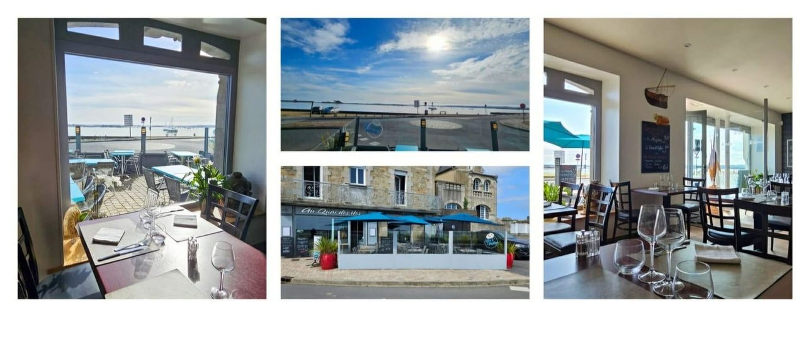
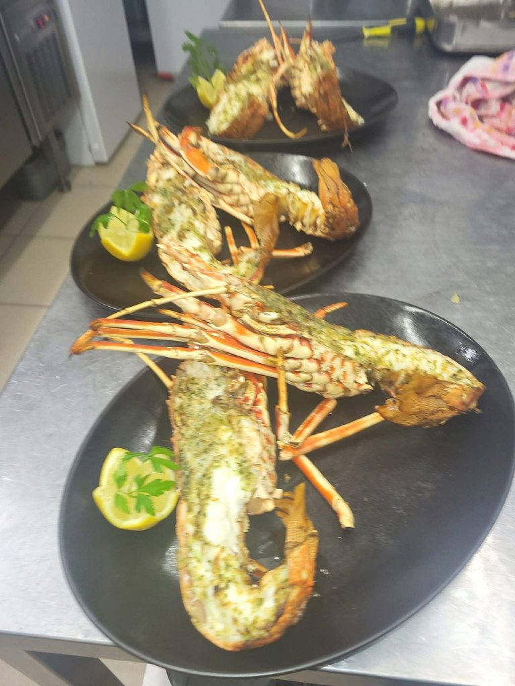
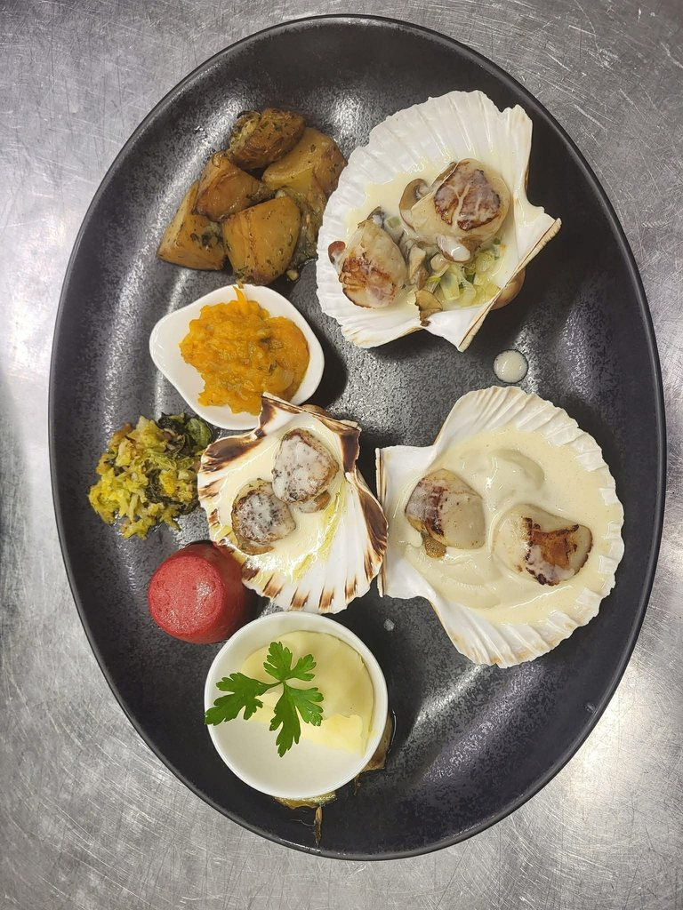
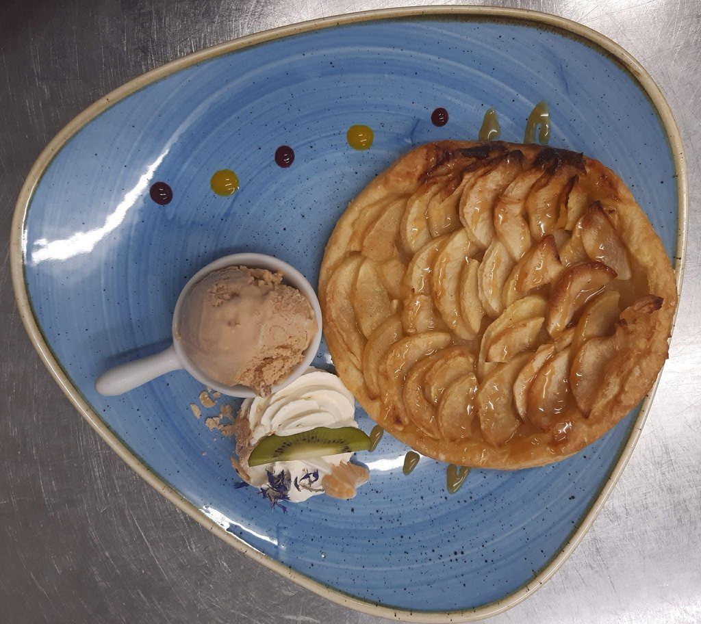

Une adresse ancree a Pempoul
Un restaurant lumineux, tourne vers la mer et les produits du terroir.
Entre la salle, la terrasse et la baie juste en face, le lieu mise sur une atmosphere simple, accueillante et locale. On vient y chercher des assiettes soignees, des portions genereuses et des produits choisis pour leur fraicheur.
Le chef Pierre-Yves Martin signe une cuisine traditionelle, gourmande et creative, ou homard breton, poisson, viande et desserts maison trouvent chacun leur place selon la saison et l'envie du moment.

L'esprit du lieu
Une table pour prendre son temps, au bord de l'eau.
Le rythme reste volontairement clair: un accueil chaleureux, des menus nets, une vue directe sur la baie et une cuisine qui valorise autant la mer que les envies plus terriennes.
L'experience sur place
Une escale simple, chaleureuse et pensee pour les repas qui comptent.
On s'y retrouve pour un dejeuner face a la baie, un diner autour d'un homard, un repas de famille avec menu enfant, ou simplement une table ou l'on sait que les informations essentielles sont claires.
Terrasse
Pour profiter du port et de la lumiere du littoral.
Parking prive
Un acces pratique juste en face du restaurant.
Wi-Fi
Disponible sur place avec une ambiance calme.
Menu enfant
Une formule simple pour les plus jeunes convives.
A emporter
Plats prepares et click & collect selon le service.
Animaux acceptes
Les compagnons bien eduques sont les bienvenus.
Galerie
Quelques images du lieu, des assiettes et de l'atmosphere.



Signaux de confiance
Une adresse claire, locale et bien identifiee pour preparer sa venue.
Le bon repere
12 quai de Pempoul
Une table posee face a la baie de Morlaix, facile a reperer au port de Saint-Pol-de-Leon.
Des prix lisibles
De 10 EUR a 75 EUR
Menu enfant, formule dejeuner, menu gourmand ou homard breton: chacun peut situer son budget.
Une adresse reconnue
Travellers' Choice 2025
Tripadvisor reference pres de 400 avis observes le 28 mars 2026, sans qu'il soit necessaire de reproduire les commentaires sur cette page.
Infos pratiques
Tout ce qu'il faut pour venir, appeler et reserver.
- Adresse
- 12 quai de Pempoul, 29250 Saint-Pol-de-Leon
- Telephone
- +33 (0)2 98 19 43 73
- Portable
- +33 (0)6 61 47 57 75
- pym.ilebourbon@gmail.com